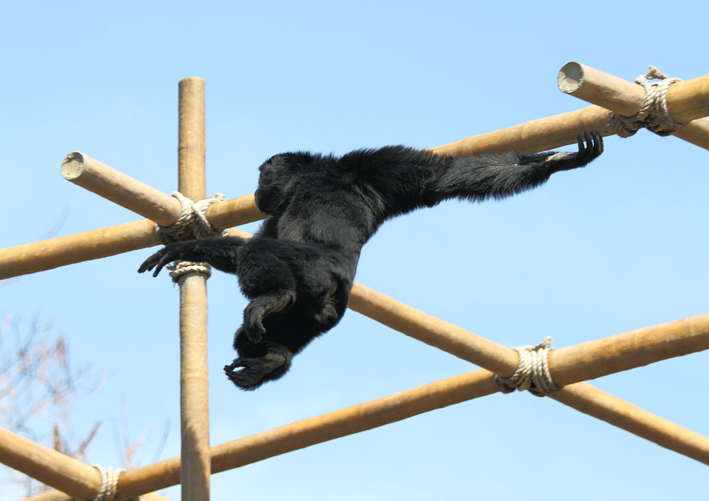
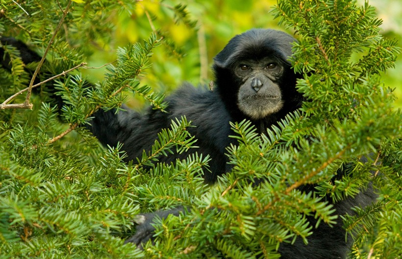

Presencia
El Arcóbata de la selva
Braquiación

El Siamang es una especie arbórea y pasa la mayor parte del día trasaladándose a través de los árboles. Tienen fuertes manos en forma de gancho para aferrarse a los troncos de los árboles, con brazos extremadamente largos para alcanzar ramas lejanas con patas largas y potentes para mayor impulso y agarre. Las articulaciones de sus hombros están especialmente adaptadas para admitir un mayor rango de oscilación giratoria cuando se balancean de rama en rama. Esta técnica es conocida como braquiación.
Conservación
Estos representativos moradores de los árboles están entre los primates con mayor peligro de extinción de toda la faz del planeta. Su hábitat está desapareciendo a una velocidad vertiginosa y a menudo son capturados y vendidos como mascotas o masacrados para uso en la medicina tradicional. •Degradación, fragmentación y pérdida de hábitat. •Caza por comercio de mascotas y en algunas áreas de su distribución para consumo humano. •Amenazada por la minería y construcción de carreteras.
Movements and maneuvers
Lo que ven arriba lo "tomé prestado" de Are we alone?, un trabajo de Adolfo Arranz y Pablo Robles, publicado en el South China Morning Post. Lo tomé por dos razones: (1) En cada SVG pueden ver animaciones, y (2) cada SVG está separado para adaptarse a distintas pantallas: Parece una única gráfica, pero en realidad son seis, y cada una presenta un par de movimientos.
Y podemos encontrar maneras más sencillas de animar SVG. Podemos usar sólo CSS, como en el siguiente caso; donde tenemos un par de animaciones, cada una con su transformación en 2D:
Este es el saco gural o faringeo del Siamang, que puede inflarse hasta alcanzar el tamaño de su cabeza. Está presente en macho y hembra. Se trata de una característica morfológica única que los distingue de otros gibones.
Membrana interdigital entre dedos II y III (se desconoce su función)
Familia

Los gibones son monógamos (una característica poco habitual entre los primates) y viven en grupos familiares que consisten de una pareja adulta y sus crías jóvenes. La familia vigilará un territorio concreto y lo defenderá mediante fuertes e inquietantes aullidos que pueden resonar a través de kilómetros en la jungla.